2021 FORD EXPLORER KING RANCH Samochód z Ameryki Przebieg 86000 km Ford Explorer w wyjątkowej wersji King Ranch - najbardziej bogate wyposażenie w historii marki. Przód samochodu posiada światła LED o wąskiej konstrukcji, wewnętrzna przestrzeń wypełniona jest łuskowatą siatką. Najważniejszą różnicą w stosunku do opcji podstawowych jest to, że we wnętrzu zastosowano kosztowną brązową skórę premium. Cechą charakterystyczną tej konfiguracji jest zastosowanie w dekoracji naturalnego drewna afrykańskiego. Kabina wygląda przyzwoicie. Znajduje zastosowanie wszędzie: wykańczanie małych części, paneli drzwiowych, podłokietników, siedzeń w przednim i tylnym rzędzie. Kabina wyposażona jest w osobną klimatyzację oraz podgrzewane przednie i tylne rzędy siedzeń. W drugim rzędzie znajdują się fotele kapitańskie. Niezależne zawieszenie sprężynowe. Wyposażony w 3-litrowy silnik turbo o mocy 365 km. Skrzynia automatyczna 10-biegowa SelectShift 10R60 Napęd: AWD + Terrain Management System Koła z lekkich stopów 20 cali z oponami 255/55 Tapicerka skórzana dwukolorowa Del Rio w kolorze Mesia/Norias Deska rozdzielcza i boczki drzwiowe obite skórą Del Rio Wykończenie kabiny z naturalnego drewna Sapele Fotele przednie multikonturowe podgrzewane, wentylowane i z masażem Kanapa podgrzewana Trzeci rząd siedzeń składany elektrycznie Kierownica sportowa obszyta skórą, podgrzewana Klimatyzacja automatyczna trzystrefowa Dach panoramiczny dwuczęściowy (Twin Panel Moonroof) Reflektory Signature LED Światła przeciwmgłowe + światła tylne LED Elektryczna klapa bagażnika Lusterka zewnętrze elektryczne, podgrzewane, samościemniające się, z pamięcią ustawień System multimedialny SYNC3 z pionowym wyświetlaczem centralnym 10.1 cala, nawigacją GPS sterowaną głosem, CarPlay/Android Auto, USB A/C, AUX, Bluetooth, ładowarką bezprzewodową smartfona System nagłośnienia Bang & Olufsen (14 głośników) Kamery 360 stopni Szyby tylne przyciemniane Relingi dachowe w kolorze satyny + poprzeczki dachowe Poczwórne zakończenie układu wydechowego Czujniki deszczu + ciśnienia powietrza w kołach (TMPS) Dostęp bezkluczykowy we wszystkich drzwiach samochodu System zdalnego odpalania samochodu Hak holowniczy z najwyższą wersją pakietu Trailer Tow Systemy Ford Co-Pilot360 + FordPass System stabilizacji pojazdu przy wietrze bocznym Samochód się znajduje w Kłajpedzie. Na kłamie bagażniku oraz zderzaku są nieduże uszkodzenia. Vin: 1FM5K8LC6MGB77665 W razie pytań zapraszam do kontaktu pod numer .ooa-j3iomg{background-color:transparent;border:none;color:#0071CE;cursor:pointer;font-size:16px;padding:0;white-space:break-spaces;}Wyświetl numer Ivan (Telegram)
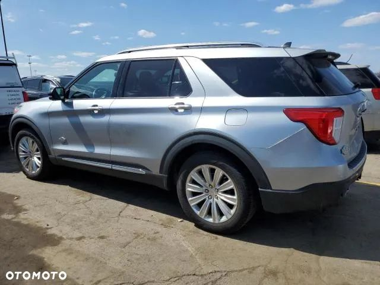
 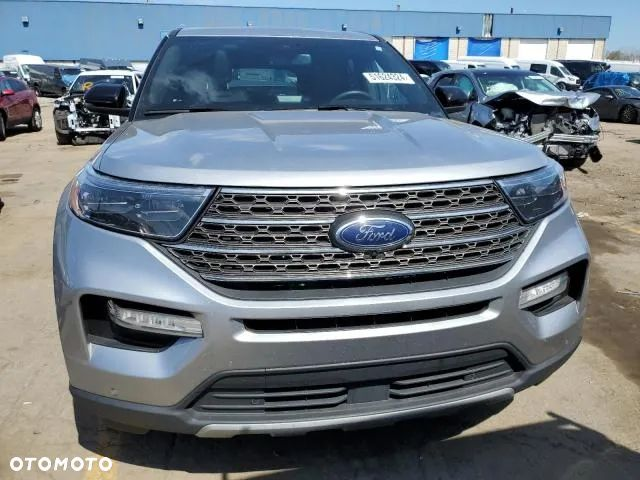
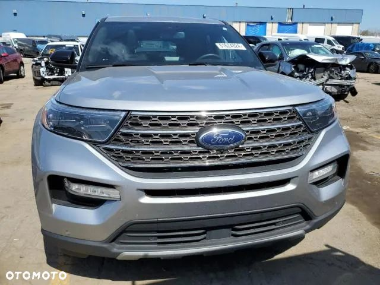 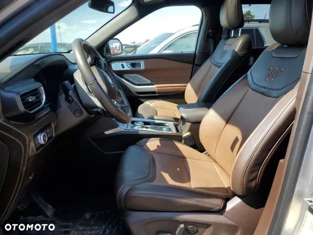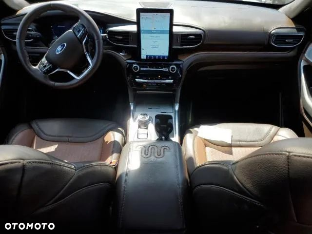
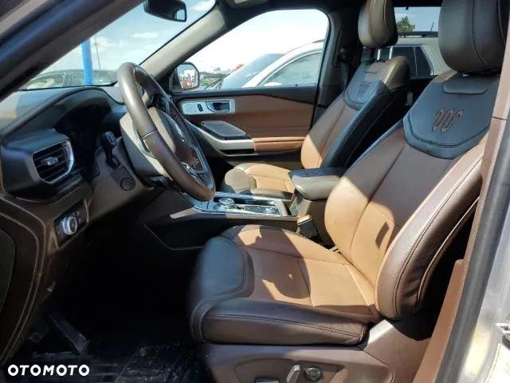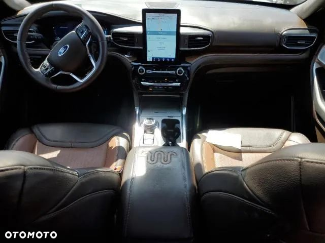 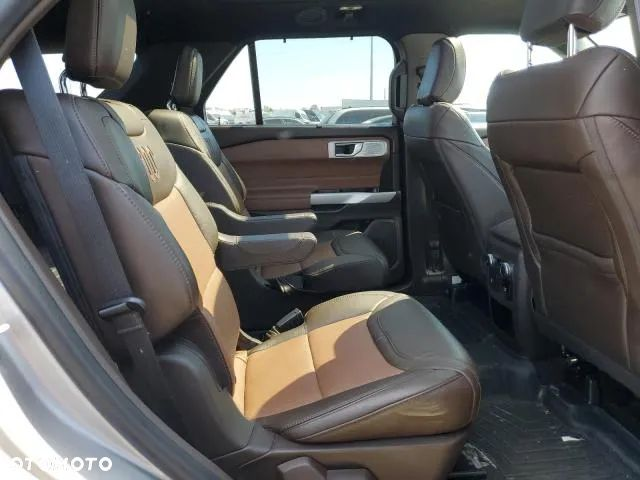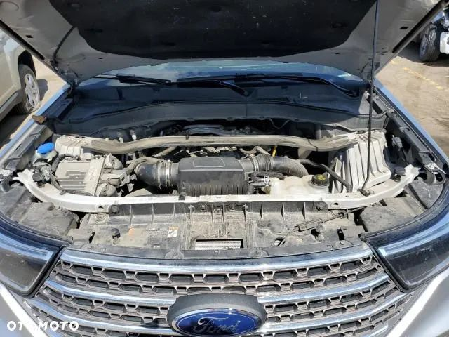
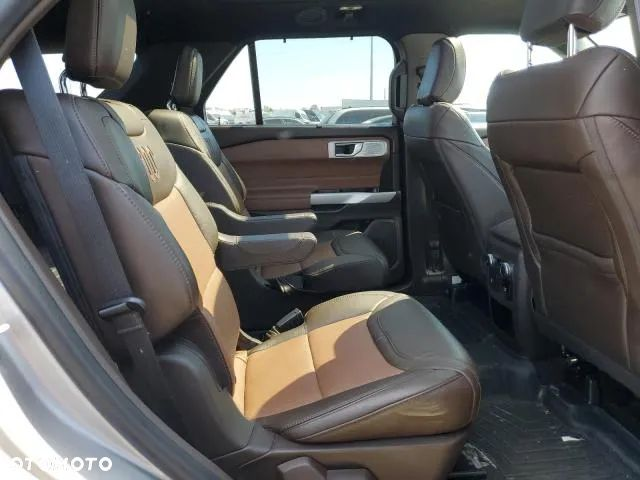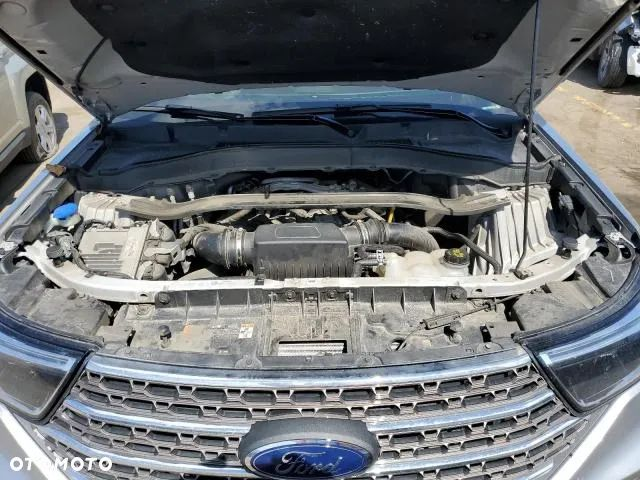